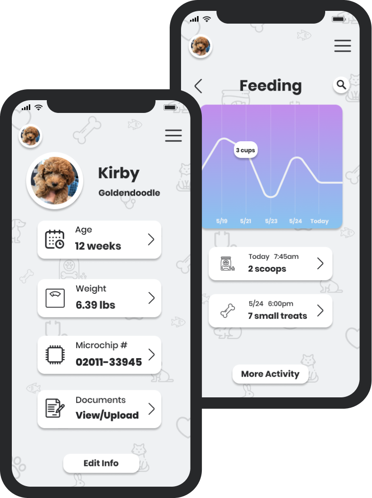

Companion App

In America alone, more 67% of families own some type of pet - that's about 90 million dogs, and 95 million cats, not even counting fish, rabbits, guinea pigs, and all of the other pets out there. Many pets are like family to people, and for some people, pets are their truly are their best friends. The Companion App allows users to new bring technology into those relationships with pets to ensure their health, safety, and wellbeing, no matter what their goals are. Users can get reminders to feed and exercise their pets, store important vet documents and records, integrate a gps tracking location if the pet has a microchip, and so much more.
Lead UX/UI Designer
Figma, Sketch, inVision, Typeform, UsabilityHub, Draw.io
Mar - Apr 2020
The first step of every successful design, always begins with research. I conducted to a survey to collect data on user’s behavior and needs regarding pet ownership, feeding and training, and broader social habits around pets. Analyzing this data allowed me to draw out a few key takeaways: First, every single participant either currently had a pet or grew up with a pet, and 43% of participants had recently adopted a new pet within the past year. Second, only 6% of users were using any sort of technology to help maintain the health and wellbeing of their pet, but 87% answered they would be interested in a product that allowed them to do so. Fun stat: of the participants surveryed, cat owners were 2.5 times more likely to own more than one pet compared to dog and other pet owners
With the information from this survey, I built 2 user personas that detailed what the target audiences would look like. The first was a younger group, mostly single between 16 and 26, and very tech savvy. The second group was a bit older, mostly families with 1-2 children, a bit more affluent but still used to using tech.
Before embarking on this project, I have to admit, I had not heard of a single competitor in the space, but having recently adopted a puppy of my own during the COVID-19 outbreak, I managed to find a few - let's take a look. Rover is focused on the walking business, Petdesk is more of a health tracker, and Bark n Yapp is primarily targeted to buying and selling of pets.
Next I created user stories to nail down exactly what tasks users would need to be able to complete in order to meet all their needs. Priorotiziation allowed me to focus on the most important tasks first and come back to secondary needs afterwards.
Then I created user flows, basically a blueprint for the actual functionality of the design. Both the stories and flows were used as references to guide the later stages of design, with usability and solving user problems, as the main goal of the platform.
With a clear idea of what and how the platform would work, I began skecthing out ideas of what the design could actually look like. Sketching proved to be a great way to save time, as uninspiring interfaces and layouts could easily be scrapped, improved, or tweaked before moving on to create digital wireframes.

After many interations, I landed on the designs pictured aboce and created digital mockups that would be used for initial user testing before moving on to high fidelty mockups pictured below.
Before sending everything off to developers for production, I needed to again test my design with real users to ensure the functionality and aesthetics of the platform were not hindered with additions of colors, branding, etc. With UsabilitHub, I AB tested slightly different variations of the same design in controlled environment to see what exactly users prereffered. After collecting this data, and implementing the final changes, here are the final designs I ended with.

The finished product is a app that feels good in user's hands, while giving them the functionality to care for their pets on the go. The playful look invites users in while allowing each user to customize where and what they need, to create a personalized experience for both them and their pets.